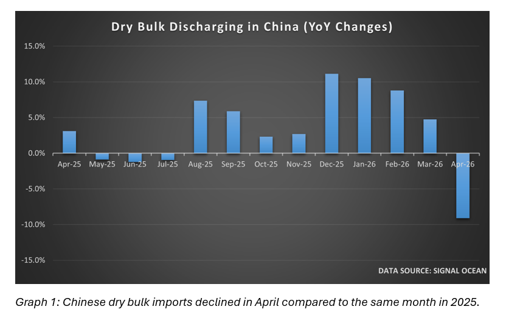
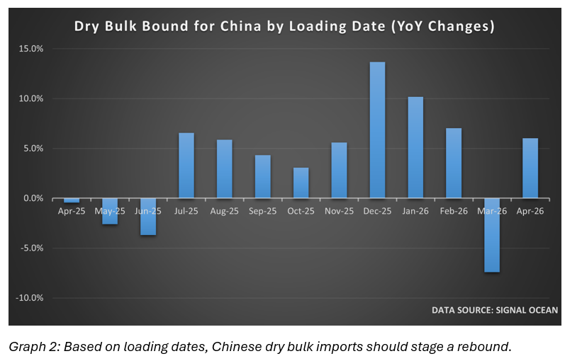

Over the weekend, China’s April trade data were released. Despite disruptions to the global economy and supply chains amid the war in Iran and the effective closure of the Strait of Hormuz, the world’s second-largest economy posted stronger-than-expected import and export figures for the past month. By contrast, the effects of the hostilities were evident in Monday’s consumer inflation data, which, though from a low base, exceeded the consensus projection and rose to 1.2 per cent.
Chinese exports recovered from a lacklustre March reading and surpassed market expectations by a considerable margin. Compared to a year ago, the shipments abroad rose by 14.1 per cent in US dollar terms. Market consensus had suggested the expansion would be more modest, but still respectable, at around eight per cent. The rise was partially fuelled by importers around the world looking to stock up on inventories amid fears that the war in Iran will force input prices higher in the coming months.
Exports bound for the US rose by 11.3 per cent year-on-year in April, but despite this surge, year-to-date sales to the world’s largest economy have shrunk by around ten per cent. However, exports to the rest of the world have remained robust and grown by nearly fifteen per cent during the year’s first four months, providing support for the economic growth.
Demand for foreign goods surged by 25.3 per cent in April, compared with the same month in 2025. While the reading was lower than the 27.8 per cent growth recorded in March, it still comfortably beat a consensus of just above fifteen per cent.
Despite rising inflationary pressures, domestic demand maintained the positive momentum seen since the beginning of the year. After remaining sluggish for much of the past four years, Chinese appetite for overseas goods has grown by 23.6 per cent over the past four months. Still, the expansion has not favoured global suppliers equally. Imports from the US declined by 10.9 per cent over the past four months, while much of the growth benefited exporters in East and Southeast Asia.
The rebound in the country’s exports last month should provide some support for dry bulk freight markets in the short term, as the associated economic activities should drive demand for imported commodities. However, the cautious approach adopted by many Chinese importers during the early stages of the Iran war continues to weigh on discharge volumes.

According to data from Signal, the volume of commodities discharged from dry bulk vessels at Chinese ports in April fell by 9.1 per cent compared with the same month last year. This was the first time since July last year that discharged volumes retreated year-on-year, and it was the most significant decline since February 2025. Coal and iron ore were the main culprits in absolute terms and, between them, accounted for around 85 per cent of last month’s drop. The former recorded a 28 per cent decline, while the latter shed seven per cent year-on-year. Still, in relative terms, most cargo types declined significantly. While all vessel segments were affected by the slowdown, the panamaxes and handysizes/maxes saw disproportionate declines.
While overall imports had a strong month, it is counterintuitive to see the soft shipping data. However, the weakness in dry bulk commodities is likely attributable to several factors. Extended lead times in the seaborne trade for raw materials likely played a part, with Chinese importers being risk-averse amid ample inventories during the early stages of the hostilities. Volatile commodity prices and disruptions to traditional trade flows are also likely to have had both direct and indirect effects on trading volumes.

By contrast, data on dry bulk exports to Chinese ports paint a different picture. Based on loading dates rather than discharge, the data show that exports to the world’s second-largest economy rose by more than six per cent year on year in April, with much of this expected to be discharged at ports in May and June. This suggests that Chinese importers shifted from risk aversion to inflation hedging amid concerns that the war in Iran will push commodity prices even higher in the coming weeks and months. Hence, stock building should support demand for imported commodities.
The current lack of clarity over the future of the ceasefire and any potential peace deal in Iran suggests that uncertainty over commodity prices and supplies will prevail. This will provide additional support for any drive to add to existing inventories as importers hedge against further commodity price increases. Still, such a development is unlikely to be open-ended, as an extended period of uncertainty will revive concerns about economic growth. Hence, the recovery in exports bound for China last month points to near-term support for dry bulk freight rates that is unlikely to be sustained.
Data source:Ocean Analytics